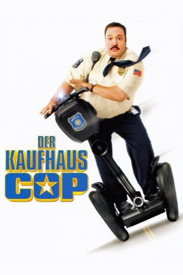

#903 Der Kaufhaus Cop
Alternativ: Paul Blart: Mall Cop
 
 IMDB-Wertung: 5.2 / 10
IMDB-Wertung: 5.2 / 10  Metascore: 39
Metascore: 39 
Das Leben von Paul Blart bietet recht wenig Spaß. Er hat keine Frau, nur seine Tochter Maya ist ihm ein Lichtblick. Seinen Lebensunterhalt verdient er als Wachmann in einem Einkaufszentrum - wo er sich in die hübsche Verkäuferin Amy verguckt. Seine Annäherungsversuche sind unbeholfen, aber immerhin nicht komplett wirkungslos. Als sein neuer Kollege Veck Sims sich als Kopf einer Einbrechertruppe entpuppt, die in der Mall Geiseln nimmt, scheint Pauls große Stunde zu schlagen: Der schusselige Wächter wurde von den Gaunern übersehen und versucht nun auf eigene Faust, die Bösewichte aus dem Verkehr zu ziehen. Auch Amy und Maya sind gefangen...
Jahr: 2009
Dauer: 91 Minuten
FSK: 6
Land: USA Studio: Columbia PicturesTonspuren:
Untertitel: Deutsch,
Auflösung: 1080p (1920x1040) Größe: 6410 MB
Genre: Action, Komödie, Krimi, Familie
Regisseur: Steve Carr
Drehbuch: Kevin James, Nick Bakay
Soundtrack: Waddy Wachtel
Darsteller:
 Kevin James als Paul Blart
Kevin James als Paul Blart Keir O'Donnell als Veck Simms
Keir O'Donnell als Veck Simms Jayma Mays als Amy
Jayma Mays als Amy- Raini Rodriguez als Maya
 Shirley Knight als Mom
Shirley Knight als Mom- Stephen Rannazzisi als Stuart
 Peter Gerety als Chief Brooks
Peter Gerety als Chief Brooks Bobby Cannavale als Cmdr. James Kent
Bobby Cannavale als Cmdr. James Kent- Adam Ferrara als Sergeant Howard
- Jamal Mixon als Leon
- Adhir Kalyan als Pahud
 Erick Avari als Vijay
Erick Avari als Vijay Gary Valentine als Karaoke Singer
Gary Valentine als Karaoke Singer Allen Covert als Jerky Security Guy
Allen Covert als Jerky Security Guy- Mike Vallely als Rudolph
- Mike Escamilla als Blitzen
- Jason Packham als Comet
- Rick Thorne als Cupid
- Natascha Hopkins als Vixen
 Jackie Sandler als Victoria's Secret Sales Associate
Jackie Sandler als Victoria's Secret Sales Associate Jackie Flynn als Officer
Jackie Flynn als Officer- Steffiana De La Cruz als Shopper with Kids
 Dylan Clark Marshall als Jacob
Dylan Clark Marshall als Jacob- Tyler Spindel als SWAT Tech
- Bas Rutten als Drill Instructor
- Dahlia Salem als Mother
- Zele Avradopoulos als Victoria's Secret Customer
 Maria Arcé als Victoria's Secret Customer
Maria Arcé als Victoria's Secret Customer Robert Harvey als SWAT Officer
Robert Harvey als SWAT Officer- Carla Antonino als Joe's Waitress
 Stephanie Atkinson als Shopper , uncredited
Stephanie Atkinson als Shopper , uncredited- William Bornkessel als Shopper , uncredited
 Jodie Brunelle als Shopper , uncredited
Jodie Brunelle als Shopper , uncredited- Gio Castellano als Mall Shopper , uncredited
 Chemi Che-Mponda als Mall Shopper / Wedding Guest , uncredited
Chemi Che-Mponda als Mall Shopper / Wedding Guest , uncredited Jeffrey Corazzini als Security Guard , uncredited
Jeffrey Corazzini als Security Guard , uncredited- Benjamin Crocker als Mall Shopper , uncredited
- Kevin DeCoste als Shopper , uncredited
 Michael DeMello als Shopper , uncredited
Michael DeMello als Shopper , uncredited Susan Farese als Upscale Shopper , uncredited
Susan Farese als Upscale Shopper , uncredited Sari Gagnon als Mall Shopper , uncredited
Sari Gagnon als Mall Shopper , uncredited Suzanne Gillies als High Fashion Shopper , uncredited
Suzanne Gillies als High Fashion Shopper , uncredited Albert Gornie als Wedding Guest , uncredited
Albert Gornie als Wedding Guest , uncredited- Cody Harter als Mall Shopper , uncredited
- Matt Heron-Duranti als Mall Shopper , uncredited
 Frankie Imbergamo als Usher , uncredited
Frankie Imbergamo als Usher , uncredited Ren Knopf als Shopper , uncredited
Ren Knopf als Shopper , uncredited Dan Marshall als Mall Shopper / Dancing Bistro Waiter at Wedding , uncredited
Dan Marshall als Mall Shopper / Dancing Bistro Waiter at Wedding , uncredited- Andrew J McGuinness als Shopper , uncredited
- Jason Mulcahy als Police Recruit , uncredited
Datei: X:\2-Dilogie(G-M)\Kaufhaus Cop\Kaufhaus Cop, Der (2009, FSK6, 1920x1040).mkv seit 16.04.2015
Festplatte: HD Collection-2(A-Z)-3(A-M)
 Alle Filme aus Gruppe '2-Dilogie(G-M)\Kaufhaus Cop'
Alle Filme aus Gruppe '2-Dilogie(G-M)\Kaufhaus Cop'